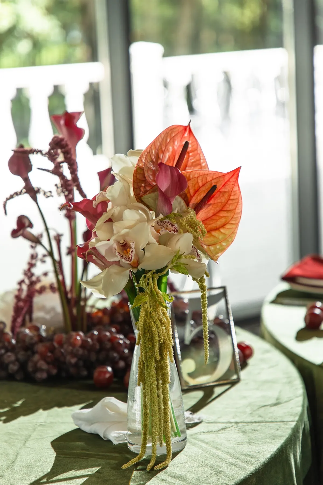

Красный на свадьбе — смелый выбор: он сразу задаёт настроение и отлично выглядит на фото. Но яркий цвет легко «перекричать» всё остальное. Рассказываем, как построить красную палитру так, чтобы она была праздничной, а не тяжёлой, — на примере нашей свадьбы с красным бархатом.
Какой красный выбрать
Красный бывает разным: чистый алый, глубокий бархатный, терракотовый, приглушённый «кирпичный». Для праздничной свадьбы чаще берут насыщенный бархатный красный: он выглядит торжественно и хорошо держит фактуру ткани. Если хочется приглушённее и «винно», посмотрите в сторону бордо — об этом в статье про свадьбу в бордовом цвете.
Выберите один основной красный и держитесь его: два разных красных в одном зале выглядят случайно.
С чем сочетать красный
- С оливковым и зелёным. Зелень уравновешивает яркий цвет и делает палитру природной. В нашей свадьбе «Красный бархат и зелень» оливковый текстиль на столах и красные салфетки смотрятся как единая история.
- С белым. Светлая база разгружает зал и подчёркивает красные акценты.
- С тёплыми оттенками. Терракота и тёплые цвета в цветах делают палитру мягче.
Красное лучше брать главным акцентом, а не фоном. Если красного много везде, взгляду не за что зацепиться.


Красный бархат: фактура и объём
Бархат делает красный глубже и дороже: на складках он играет светом и тенью. В нашей свадьбе из красного бархата сделали скульптурную волну на террасе — в неё заходят, садятся и фотографируются весь вечер. Такой объект работает и как декор, и как фотозона. Подробнее о тканях — в статье про текстиль и драпировку, о фотозонах — в статье про фотозону на свадьбу.

Где повторять красный
- Фотозона или главный объект. Самое крупное красное пятно.
- Салфетки и текстиль. Красные салфетки на светлой или оливковой скатерти — простой приём.
- Флористика. Антуриумы, каллы и виноград в красных оттенках.
- Детали. Ленты, карточки, свечи, полиграфия.
Совет: красный особенно хорош вечером и осенью — он работает со свечами и тёплым светом. Подробнее об осеннем оформлении — в статье про свадьбу осенью.
Как заказать
Расскажите о площадке и дате — подберём оттенок красного под ваш зал и свет и посчитаем смету. О выборе палитры в целом — в статье про цвет свадьбы.
Частые вопросы
Красная свадьба — это слишком ярко?
Если красный один главный цвет и уравновешен зеленью или белым, он выглядит торжественно, а не кричаще.
Какие цветы подойдут для красной свадьбы?
Красные и бордовые цветы с зеленью; в нашем кейсе — антуриумы, каллы и виноград. Конкретные сорта флорист подберёт под сезон.
Чем красный отличается от бордо?
Красный ярче и праздничнее, бордо глубже и спокойнее. Для вечера и осени часто выбирают бордо, для яркого праздника — красный.